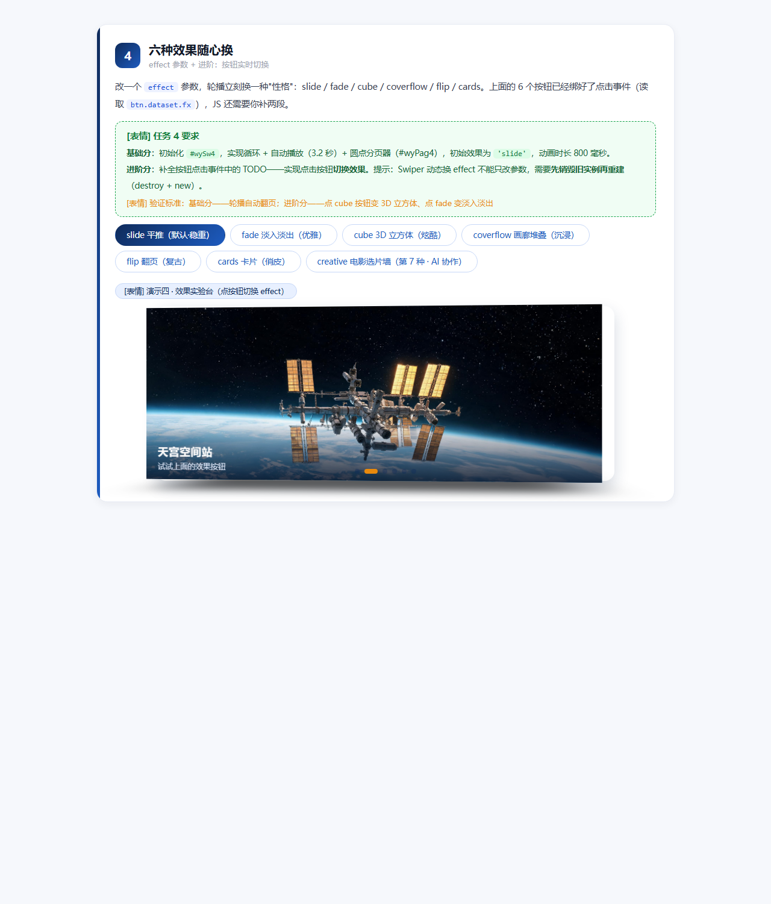

Swiper 轮播组件 · 大国重器光影展（学生版）
HTML 骨架和 CSS 样式已经全部搭好，图片也备齐了——但这个页面的轮播一个都不会动！ 因为所有 <script> 里的 JS 初始化代码都被抽走了。你的任务：把 4 个轮播全部"救活"。
① Swiper 组件库已通过 CDN 引入（页面第 8、9 行），不需要再写引入代码；
② 每个"演示台"下面的绿色卡片就是该任务的要求，JS 代码统一写在页面最底部的
<script> 区域内；③ 每完成一个任务就刷新页面验证：能拖、能点、会自己翻，才算通过；
④ 控制台（F12）报错是你要最好的朋友——先读报错，再改代码。
救活最小轮播三行 JS · 让照片可以拖动
下面是"最小轮播"骨架：三层结构齐全，但因为没有初始化，照片僵在第一张。请写出初始化代码，让它至少可以按住拖动。
[表情] 任务 1 要求
在页面底部 <script> 中初始化 #wySw1，让它成为可拖动的轮播（最基础写法，一个空配置对象即可）。

天宫空间站
2022 年全面建成 · 中国人的太空家园

复兴号动车组
350 km/h · 世界商业运营最高时速

C919 大飞机
2023 年商业首航 · 国产干线客机翱翔蓝天

奋斗者号
10909 米 · 触碰地球第四极马里亚纳海沟

中国天眼 FAST
500 米口径 · 世界最大单口径射电望远镜

爱达·魔都号
2024 年 1 月首航 · 首艘国产大型邮轮（AI 生成图）
装上遥控器pagination 圆点 + navigation 箭头
HTML 里已经埋好了三个"遥控器"元素：#wyPag2（圆点）、#wyPrev2 / #wyNext2（左右箭头）。请通过配置让它们"通电"。
[表情] 任务 2 要求
初始化 #wySw2，实现 4 个效果：① 无缝循环（loop）② 切换动画时长 600 毫秒（speed）③ 圆点分页器且可点击跳转（pagination，别漏 el）④ 两侧箭头可切换（navigation）。
天宫空间站
三舱结构 · 神舟乘组常年值守
复兴号动车组
京张高铁智能驾驶 · 百年京张到智能京张
C919 大飞机
让中国人的大飞机梦照进现实
奋斗者号
坐底万米 · 深海探测进入"中国时代"
中国天眼 FAST
南仁东先生 22 年铸就的观天巨目
爱达·魔都号
2024 年 1 月首航 · 首艘国产大型邮轮（AI 生成图）
让它自己翻页autoplay 自动播放 + loop 无缝续播
网页 Banner 最常见的形态：自己会翻页。autoplay.delay 控制每张停留的毫秒数，disableOnInteraction: false 表示用户手动滑动之后自动播放不停止。
[表情] 任务 3 要求
初始化 #wySw3，实现：① 循环播放 ② 每 2.6 秒自动翻页 ③ 用户拖动之后自动播放继续 ④ 保留底部圆点分页器（#wyPag3）。
天宫空间站
巡天遥看一千河
复兴号动车组
中国速度 · 风驰电掣
C919 大飞机
蓝天之上 · 大国担当
奋斗者号
万米深潜 · 无畏探索
中国天眼 FAST
仰望星空 · 脚踏实地
爱达·魔都号
2024 年 1 月首航 · 首艘国产大型邮轮（AI 生成图）
六种效果随心换effect 参数 + 进阶：按钮实时切换
改一个 effect 参数，轮播立刻换一种"性格"：slide / fade / cube / coverflow / flip / cards。上面的 6 个按钮已经绑好了点击事件（读取 btn.dataset.fx），JS 还需要你补两段。
[表情] 任务 4 要求
基础分：初始化 #wySw4，实现循环 + 自动播放（3.2 秒）+ 圆点分页器（#wyPag4），初始效果为 'slide'，动画时长 800 毫秒。
进阶分：补全按钮点击事件中的 TODO——实现点击按钮切换效果。提示：Swiper 动态换 effect 不能只改参数，需要先销毁旧实例再重建（destroy + new）。
[表情] 验证标准：基础分——轮播自动翻页；进阶分——点 cube 按钮变 3D 立方体、点 fade 变淡入淡出天宫空间站
试试上面的效果按钮
复兴号动车组
同一组照片，六种讲述方式
C919 大飞机
企业官网爱用 fade
奋斗者号
游戏网站爱用 cube
中国天眼 FAST
相册页面爱用 coverflow
爱达·魔都号
2024 年 1 月首航 · 首艘国产大型邮轮（AI 生成图）
任务一 · 提示词工程师不写代码写提示词 · 让 AI 听懂需求（两轮迭代）
把下面的需求"翻译"给 AI，让它生成 new Swiper('#wySw4', {...}) 配置：① 无缝循环 ② 3.2 秒自动翻页且手动操作后不停止 ③ 圆点分页器可点击 ④ 初始效果为 cube。下面保留了两轮完整的提示词与 AI 回答。
var swiper4 = new Swiper('#wySw4', {
loop: true,
autoplay: { delay: 3200 }, // ✗ 漏了 disableOnInteraction —— 手动一拖，自动播放就停了
pagination: { el: '.swiper-pagination' }, // ✗ el 写成默认类名，页面分页器实际是 #wyPag4，圆点不出现
effect: 'cube',
});
new Swiper('#wySw4', {...}) 的完整配置，逐条满足：① loop: true 无缝循环；② autoplay: { delay: 3200, disableOnInteraction: false }——用户手动拖动后自动播放不停止；③ pagination: { el: '#wyPag4', clickable: true }——el 必须对准页面里 id 为 wyPag4 的分页器，圆点可点击跳转；④ 初始效果 effect: 'cube'；切换动画时长 speed: 800。只给完整配置代码，不要解释。
var wySw4 = new Swiper('#wySw4', {
loop: true,
speed: 800,
effect: 'cube',
autoplay: { delay: 3200, disableOnInteraction: false },
pagination: { el: '#wyPag4', clickable: true },
});
disableOnInteraction（需求②不满足）、分页器 el 写成默认类名对不上 #wyPag4（需求③圆点不出现）。
🎤 答辩追问 · 我的回答
第一版漏掉了哪个需求？漏了"手动操作后不停止"——我只说了"自动播放"，没提人动过之后还要继续，而 Swiper 的 disableOnInteraction 默认是 true（一拖就停）。
第二轮怎么说清楚的？把每条需求直接翻译成「参数名：值」清单，并点名 el 必须是 #wyPag4，不给 AI 自由发挥的空间。
AI 第一次的代码错在哪？① pagination.el 用了默认类名 .swiper-pagination，与页面里 #wyPag4 对不上，圆点不显示；② autoplay 少了 disableOnInteraction: false。
任务二 · creative 仿写课堂没讲的第 7 种效果 · 配合 AI 读懂官方示例
课堂讲了 6 种 effect，Swiper 其实还有第 7 种——creative（自定义变换）。参考官方示例 swiper/demo/257-effect-creative.html，配合 AI 读懂 creativeEffect 的 prev / next transform 写法后，我在演示四新增了第 7 个按钮——creative 电影选片墙：上一张上抬缩小移开并带 20 度角度，下一张从右侧放大进场。去上面的演示四点「creative」按钮即可体验。
creativeEffect: {
prev: { translate: ['0%', '-110%', -600], rotate: [0, 0, -20], opacity: 0.2 },
next: { translate: ['110%', '0%', 0], scale: 1.35, opacity: 0 },
}
🎤 答辩追问 · 我的回答
prev / next 的 transform 各控制什么？prev 控制"正在离开的那张"如何退场，next 控制"正在进来的那张"如何进场；[x, y, z] 是三维位移，rotate 是三维旋转，再配合 opacity 淡出淡入。
transform 里的百分号相对谁？相对 slide 自身：x% 相对自身宽度、y% 相对自身高度（z 是像素，表示 3D 纵深）。所以 '110%' 就是"往右挪出一个 slide 宽"。
改一个数值让卡片转 20 度？把 prev.rotate 的第三位改成 -20，即 rotate: [0, 0, -20]——本页最终就采用了 20 度，负号表示逆时针。
任务三 · 综合创作 + 技术答辩第六件展品「爱达·魔都号」+ keyboard 键盘控制
① 新展品：用 AI 生成横版 16:9 图片，为光影展四个轮播都添加第六件展品——爱达·魔都号（首艘国产大型邮轮，2024 年 1 月首航），slide 结构与其它展品一致（图片见下方预览）。② 超纲能力：选了课堂上没细讲的 keyboard 键盘控制，四个轮播初始化均加 keyboard: true——点击页面后按 ← / → 方向键即可翻页。
▲ AI 生成 · 横版 16:9 · 爱达·魔都号（已作为第六件展品加入四个轮播）
keyboard: true（等价 { enabled: true }）；Swiper 没有全局开关，4 个实例要各自开启；如需避免多个轮播抢按键，可加 onlyInViewport: true 只让视口内的轮播响应方向键。
🎤 答辩四连问 · 我的回答
① 这段代码什么意思？keyboard: true 开启键盘控制模块：监听页面 ←/→ 方向键，分别触发 slidePrev() / slideNext()，Home/End 跳首尾。
② AI 第一次给的哪里不对、你改了什么？AI 第一次只给了单个实例的写法，还暗示"全局开一次就行"——实际 Swiper 没有全局开关，我把 keyboard: true 逐个加进了 4 个实例（含点按钮后重建的实例）的配置里。
③ 新学的作用？keyboard 模块默认集成在 swiper-bundle 中免引入；onlyInViewport 可只让视口内的轮播响应按键，适合一页多轮播的场景。
④ 现场把 delay 改成其它值会怎样？autoplay.delay 只控制每张停留时长：改成 800 就是 0.8 秒一翻（很急促），改成 8000 就是 8 秒一翻（很舒缓）；它不影响 speed（切换动画本身的时长）。